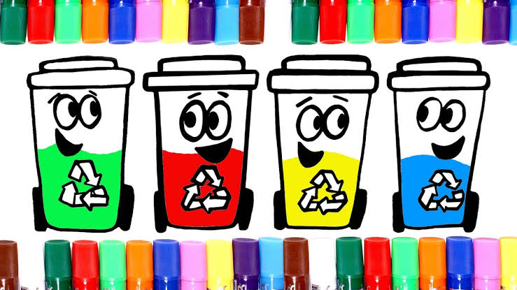

EMSAD 76 ARRAZOLA
RECICLAJE
separación de residuos y reciclado para niños y adolescentes
1. Introducción al Reciclaje

¿qué es el reciclaje?
¡Reciclar es darle una segunda vida a las cosas que ya no usamos!
El reciclaje es un proceso que permite transformar materiales de desecho en nuevos productos o materia prima, evitando así que se conviertan en residuos y contribuyendo a la protección del medio ambiente. En esencia, se trata de reutilizar elementos que de otro modo serían desechados, reduciendo la necesidad de extraer nuevas materias primas y disminuyendo la contaminación.
¿Por qué es importante reciclar?
El reciclaje es crucial para proteger el medio ambiente y la salud humana. Al reciclar, se reducen los desechos enviados a los vertederos, se conserva la energía y los recursos naturales, y se disminuye la contaminación del aire y del agua.
Transforma desechos en recursos:
1.Convierte materiales que ya no se utilizan en algo nuevo.
2.Reduce la contaminación.
3.Minimiza la cantidad de residuos que se envían a vertederos y la contaminación que estos generan.
4.Conserva recursos naturales.
5.Disminuye la demanda de nuevas materias primas, como madera, minerales y petróleo.
6.Ahorra energía
7.El reciclaje consume menos energía que la fabricación de productos nuevos a partir de materias primas.
8.Contribuye a la economía circular
9.Permite un uso más eficiente de los recursos y reduce la dependencia de la extracción de nuevas materias primas.
En resumen, el reciclaje es un proceso fundamental para proteger el planeta y asegurar un futuro más sostenible, ya que permite aprovechar los recursos de manera responsable y minimizar los impactos ambientales negativos.
Ir ala pagina principalELABORADO POR ALUMNOS:CIRINO DE JESÚS BAUTISTA LÓPEZ, ITZEL YAMILETH CATELLANOS GARCIA
grupo: 601
30 de Mayo del 2025